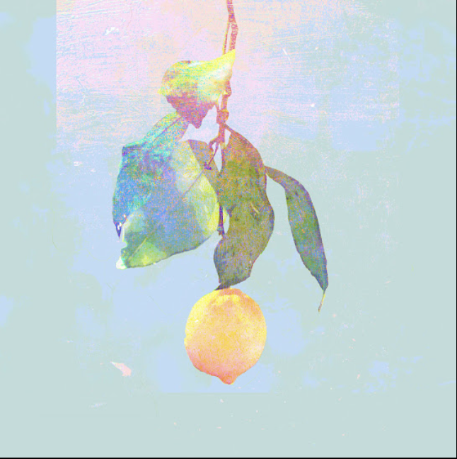

夢ならばどれほどよかったでしょう
未だにあなたのことを夢にみる
忘れた物を取りに帰るように
古びた思い出の埃を払う
戻らない幸せがあることを
最後にあなたが教えてくれた
言えずに隠してた昏い過去も
あなたがいなきゃ永遠に昏いまま
きっともうこれ以上 傷つくことなど
ありはしないとわかっている
あの日の悲しみさえ あの日の苦しみさえ
そのすべてを愛してた あなたとともに
胸に残り離れない 苦いレモンの匂い
雨が降り止むまでは帰れない
今でもあなたはわたしの光
暗闇であなたの背をなぞった
その輪郭を鮮明に覚えている
受け止めきれないものと出会うたび
溢れてやまないのは涙だけ
何をしていたの 何を見ていたの
わたしの知らない横顔で
どこかであなたが今 わたしと同じ様な
涙にくれ 淋しさの中にいるなら
わたしのことなどどうか 忘れてください
そんなことを心から願うほどに
今でもあなたはわたしの光
自分が思うより
恋をしていたあなたに
あれから思うように
息ができない
あんなに側にいたのに
まるで嘘みたい
とても忘れられない
それだけが確か
あの日の悲しみさえ あの日の苦しみさえ
そのすべてを愛してた あなたとともに
胸に残り離れない 苦いレモンの匂い
雨が降り止むまでは帰れない
切り分けた果実の片方の様に
今でもあなたはわたしの光